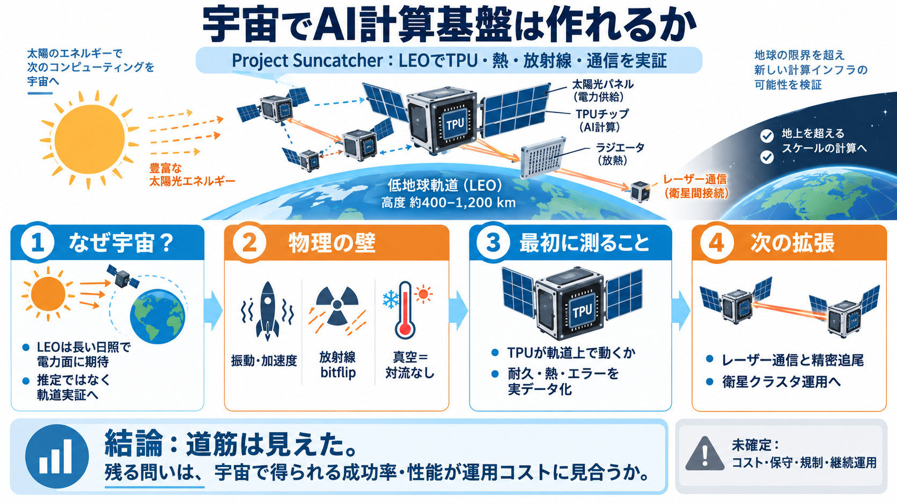

Google Suncatcher AI Data Center Launch: Oct. 1 2026
Cooling technology, not launch cost, becomes the real bottleneck. Radiative cooling in vacuum is the hardest unsolved pr…

宇宙で学ぶ・推論する
Project Suncatcher（プロジェクト・サンサッチャー）は、低地球軌道（LEO）でAI計算（機械学習の推論・学習）を大規模に回すための物理検証を目指す研究計画です。
「計算」は物理に縛られる
宇宙（特にLEO）は振動・加速度・放射線・温度・真空などが重なり、地上の常識通りに半導体と冷却が動きません。
太陽と“耐久”の勝負
LEOでは日照が長く、太陽光発電が地上より有利になり得ます（記事では最大約8倍の期待）。だからこそ「計算基盤」を現実に近づける検証を始められます。
最初は“動作確認”
最初の狙いは、宇宙環境でGoogleのTPUが実際に動作し、耐久性と熱・放射線影響をデータとして取れるかを確認することです。
壊れる要因を測る
TPUは打上げの振動・加速度と放射線下で、計算エラー（例：bitflip）をどれだけ生むかを、地上試験と軌道での観測で確かめます。
熱は最大ボトルネック
宇宙は空気の対流がなく、冷却は主にラジエータ等の放射に依存します。AI計算は発熱が大きいため、熱設計の失敗は即故障につながり得ます。
“試して学ぶ”順序
一気に完成を狙うのではなく、最初は「何がうまくいき、どこが壊れるか」を特定する学習フェーズにします。
計算には“接続”が要る
複数のTPUを衛星群で扱うには、衛星間通信の帯域がボトルネックになります。記事はレーザー通信を想定し、超精密な追尾が鍵だと述べます。
次の目標へ
2027年以降のマイルストーンでは、2機の衛星でレーザー通信の成立と性能をテストする計画が示されています。
技術の次に来るもの
本稿は主に技術実証の論点を扱い、運用コスト・ソフトウェア更新・規制・打上げ頻度などの実装条件は十分に詳しくありません。
良い点と限界
強みは、耐久性・放射線・冷却・通信を工学課題として分解し、地上試験と軌道実証で確かめる姿勢です。一方で、性能・稼働時間・現実条件での継続運用の定量は不足しています。
道筋は見えた
現時点で言えるのは「宇宙AI計算基盤の道筋（検証項目と課題の種類）が明確になってきた」ということです。経済的・社会的な成立は、追加の定量情報に依存します。
次の問いは一つ：宇宙で取れる成功率と性能が、運用コストに見合う規模まで伸びるか。
Cooling technology, not launch cost, becomes the real bottleneck. Radiative cooling in vacuum is the hardest unsolved pr…
notes that the energy is only enough to run a hair dryer, but will suffice for testing that the hardware can function in…
Processors: Google Trillium TPU v6e accelerators, which have undergone radiation testing to survive a five-year mission …
Now, here's the very interesting part. If you're already not intrigued, which is strange, Google's paper towards a futur…
Companies including SpaceX and Starcloud are pursuing plans to deploy data centers in low Earth orbit, aiming to harness…